Every character portrait and every screen of the game in one place. The line-up in §2 and §3 is drawn live from the game code and the art atlas; the screens in §5 and §6 are captures of the running build. Companion to the graphic bible, which covers the art standard itself.
STATUS
1 · HOW TO READ THIS PAGE
Four armies, twelve units each, the same twelve roles in every army: the character sheet is a 4 × 12 grid. Every screen of the game is one of thirteen layouts built from one pixel UI kit (css/style.css), so a new screen never invents a new visual language — it recombines panel, button, tag, chip, card and bar.
PORTRAIT SOURCE
A unit portrait is never a separate drawing. It is the unit itself: either a head-and-shoulders crop of the idle frame of its animation sheet, or its procedural idle sprite. The icon can never drift from the battlefield.
Screens captured at 1568 × 607 from the live build via GAME.menus.* and GAME.startBattle. Re-capture after a UI change so this page stays honest.
2 · CHARACTER LINE-UP 4 races × 12 units, portraits rendered live
Tier 1 to 12, left to right, is also the unlock order on the deployment bar and the price ladder. Roles line up across races: tier 4 is always the basic ranged unit, tier 8 the tank, tier 12 the legendary. A portrait has to sell its tier in one glance — new silhouette, new equipment, stronger identity, never a scaled-up copy.
3 · ART COVERAGE who has drawn art, who is still procedural
Art v2 replaces the procedural rig army by army. A unit moves through three states: procedural sprite → cut-out puppet rig → pixel-art animation sheet sliced by tools/sheetslice.py. The numbers below are counted at page load, so they cannot go stale.
4 · SCREEN FLOW
Thirteen screens, one loop. Menus are HTML panels over the canvas (src/ui/Menus.js); the HUD is HTML over the live battle (src/ui/HUD.js). Pause always reaches the army sheet, so a player can read counters without losing the match.
Side screens reachable from anywhere: ARMY (roster + unit detail), HOW TO PLAY, SETTINGS, PAUSE.
5 · MENU SCREENS
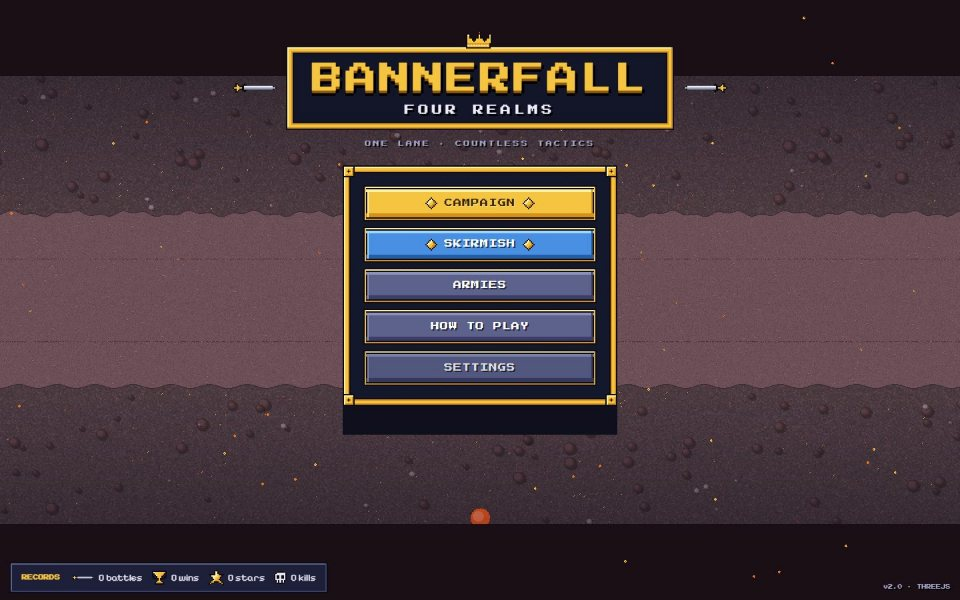
TITLECrowned gold plate with crossed swords over a live demo battle, five kit buttons in an ornate frame (campaign gold, skirmish blue), records chip along the bottom (battles, wins, stars, kills). Campaign carries the cleared-stage counter as a key chip.
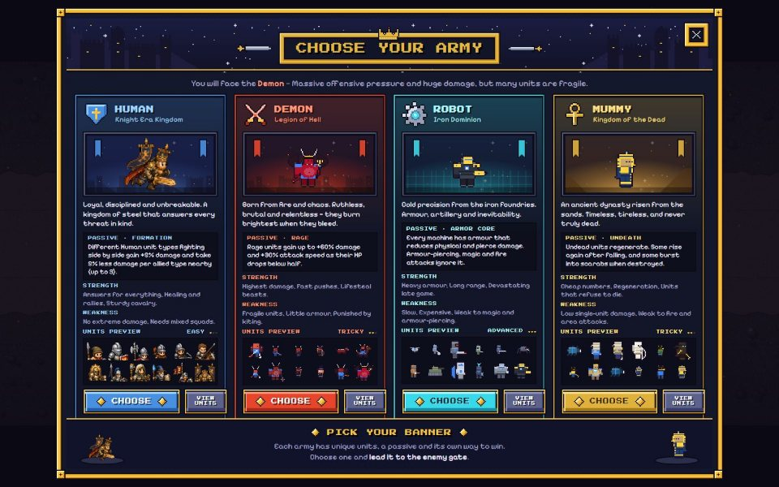
THE FOUR ARMIESOne race-coloured card per army: crest and title, an animated champion in a themed portrait window, flavour text, passive, strength, weakness, the 12-unit preview and a race-coloured VIEW UNITS button; mascots and the call to action sit in the footer band. Doubles as the pick screen before a battle, where CHOOSE takes the big button and the whole card is tappable.
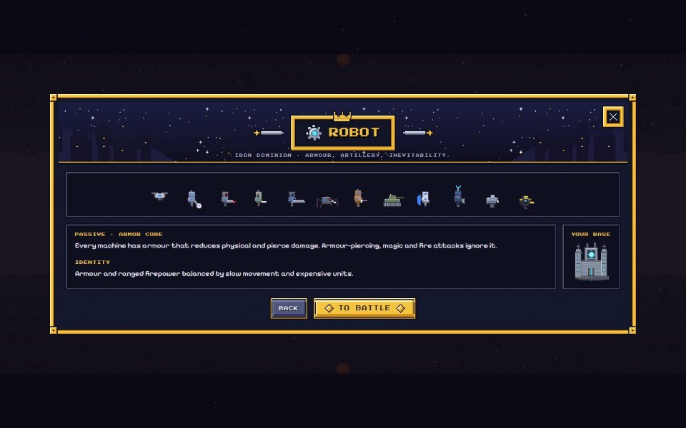
RACE REVEALShort transition after picking: the whole army animates in, the race passive and the base sprite are shown once, then TO BATTLE.
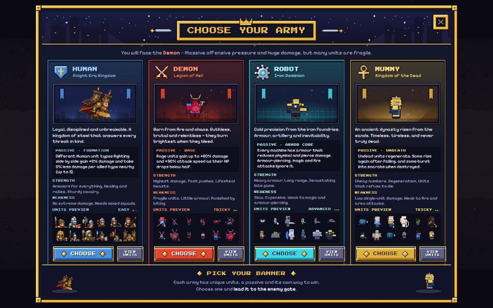
ARMY — 12-CARD ROSTERTier and hotkey, portrait, name, role, cost and squad size, three quick bars (HP / damage per second / speed), four numbers, ability name and the strong-versus-weak line. Race tabs switch armies in place.
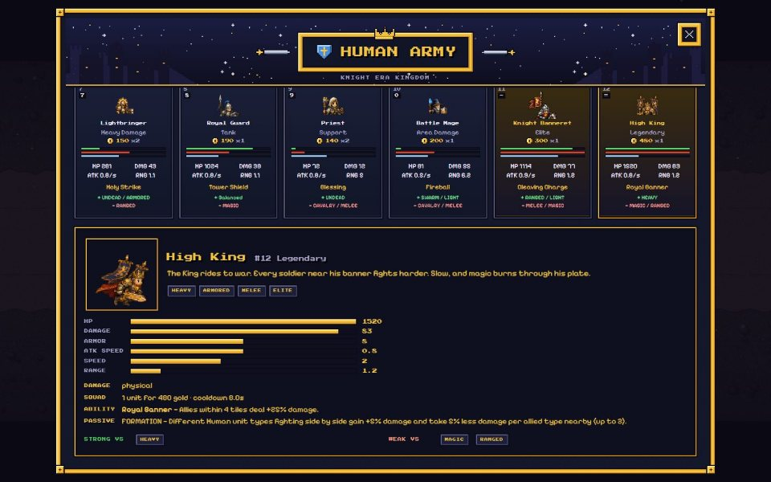
UNIT DETAILTapping a card opens the detail drawer under the grid: animated hero portrait, tags, six stat bars, damage type and squad economy, ability, passive and the two counter rows.
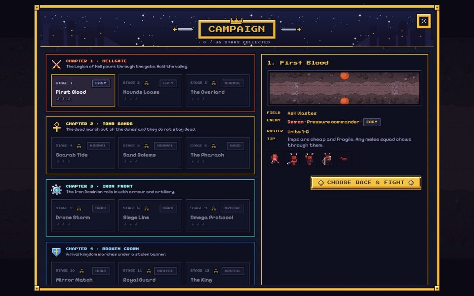
CAMPAIGNFour chapters, twelve stages, stars per stage and a padlock on anything past the frontier. The right panel previews the field, names the enemy commander personality, the roster slice and the tip.
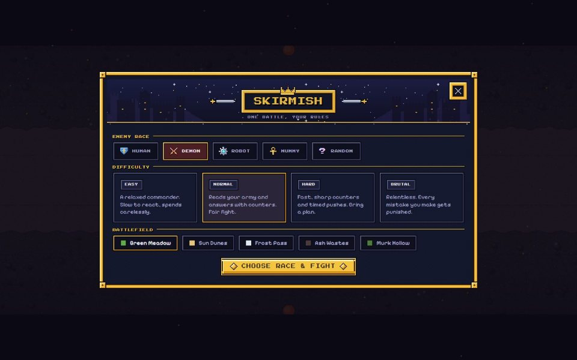
SKIRMISHThree rows of chips: enemy race (plus random), difficulty card, battlefield theme. One primary button leads into the same race pick as campaign.
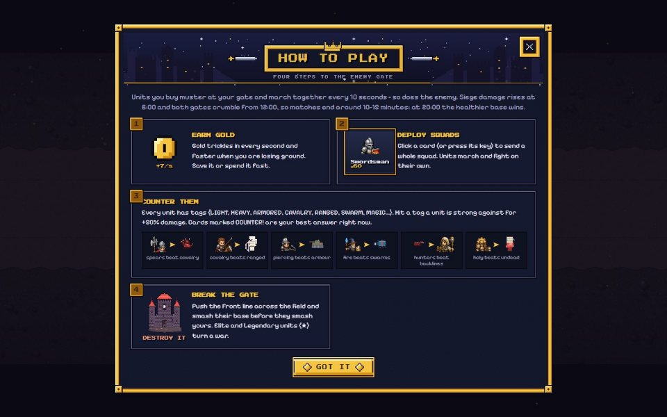
HOW TO PLAYFour numbered steps with live art: gold trickle, deployment card, the counter wheel (six real matchups drawn from the atlas) and the enemy gate. Shown once automatically before the first battle.
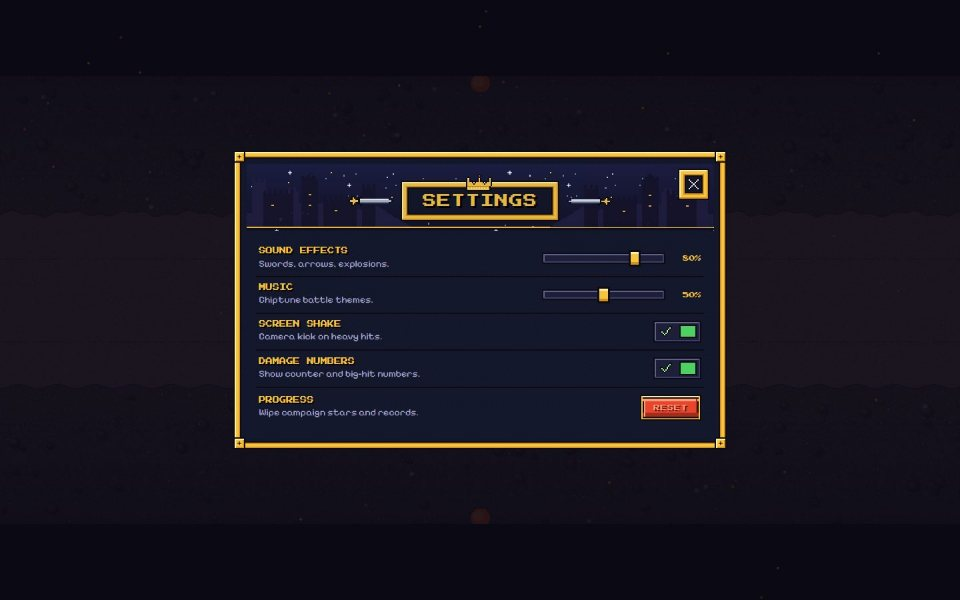
SETTINGSTwo sliders (sound effects, music), two toggles (screen shake, damage numbers) and a two-step progress reset. Reachable from the title and from pause.
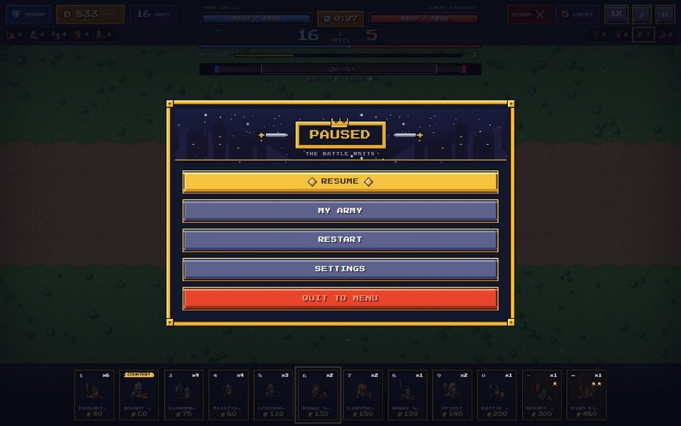
PAUSENarrow column: resume, my army, restart, settings, quit. The dimmed battle stays visible behind it.
THE SAME ROSTER IN FOUR PALETTES
One layout, four colour identities: blue steel, crimson, cyan iron, sand gold. Race colour lives in the card border, the emblem and the heading only — the data stays in the neutral panel colour so cards remain comparable across armies.
DEMON — LEGION OF HELLROBOT — IRON DOMINIONMUMMY — KINGDOM OF THE DEAD
6 · BATTLE SCREENS
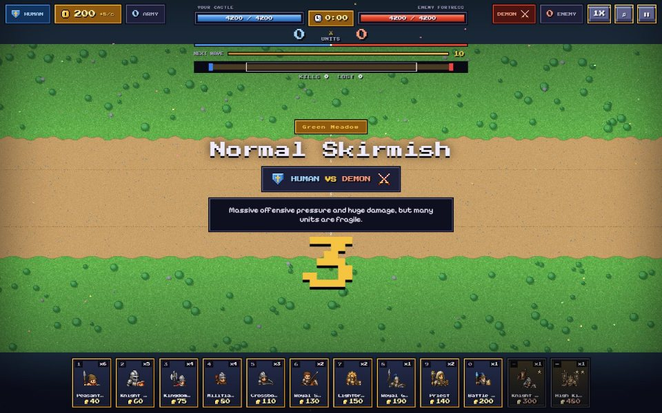
STAGE INTROStage name, field, both emblems around a VS, the tip, then a three-second countdown. The battle is already rendered behind it.
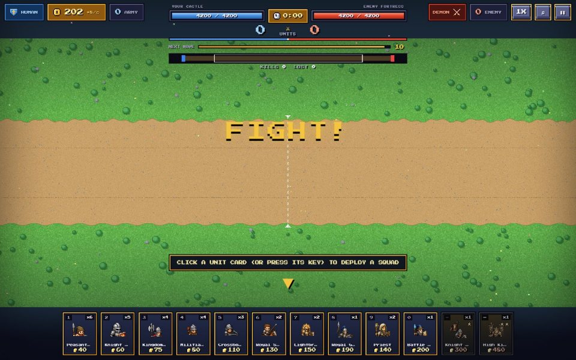
HUD — OPENINGTop left gold, income and army count; centre the two base bars, the clock, the push meter and the wave bar with the mustering queue; top right the enemy count, speed and pause; bottom the twelve deployment cards.
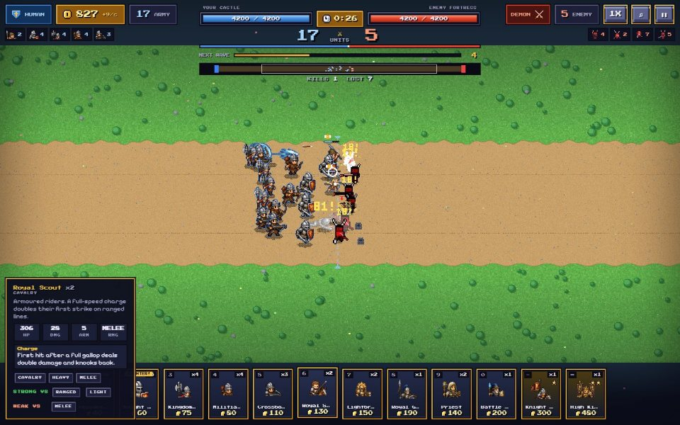
HUD — MID FIGHTComposition chips fill in on both sides, the minimap tracks the front, cards light up gold when affordable and carry a COUNTER! ribbon when they answer the current threat. The camera follows the front line across a lane about 1.5 screens wide.
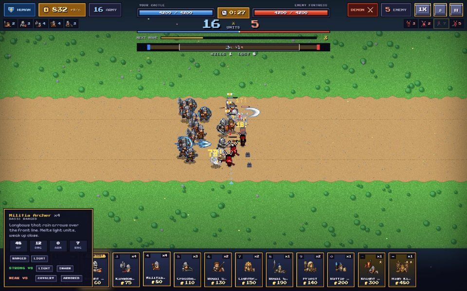
CARD TOOLTIPHover or long-press a card: squad size, role, description, four stats, ability and tags — the same data as the army sheet, without leaving the battle.
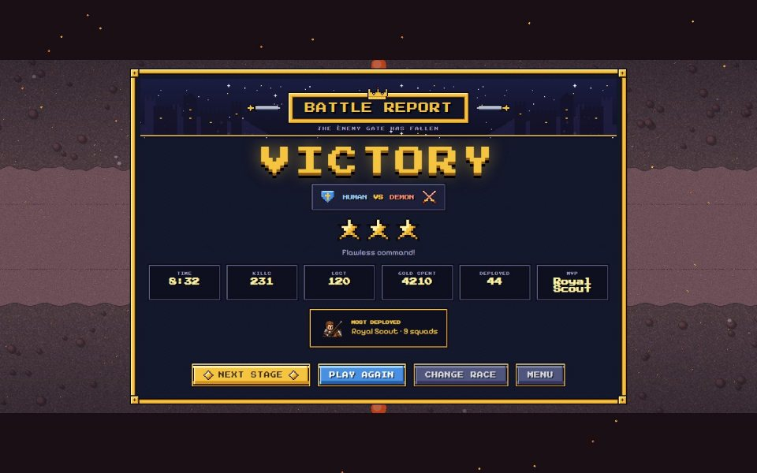
RESULTSVerdict, both emblems, up to three stars, six stat boxes (time, kills, lost, gold spent, deployed, MVP) and the most deployed squad. Buttons adapt: next stage, play again, change race, menu.
HUD ANATOMY
TOP LEFT — YOU
Gold chip with coin icon and income per second
Army count
Composition chips of your live army
TOP CENTRE — THE MATCH
Both base HP bars with the clock between them
Unit count, player versus enemy
Push meter and next-wave bar with the queue
Minimap, kills and losses
TOP RIGHT — THEM
Enemy race emblem and army count
Speed toggle, sound, pause
Enemy composition chips, current threat highlighted
7 · THE KIT BEHIND EVERY SCREEN live from css/style.css
Dark semi-transparent panels, bevelled 3-px borders with an inner dark line, chamfered corners, a hard drop shadow instead of blur. Two fonts only: Press Start 2P for headings, numbers and labels; Pixelify Sans for body copy.
PANEL
bevel + chamfer + hard shadow
EASYNORMALHARDBRUTAL
Rule: a new screen composes these pieces. No new border style, no second accent colour, no rounded buttons, no blur.
Bannerfall: Four Realms · Screen & Character Bible · line-up rendered live from the repository, screens captured from the running build · open via node tools/serve.mjs 8765 → /docs/screen-bible.html